Overview
| Site | Archetype | Score | Headline | Primary CTA | Price / pass / schedule in hero |
|---|---|---|---|---|---|
| Remedy Place | A | 3 | Self-Care Made Social | Reservations (desktop header also has "Book") | None. No price, pass or schedule in the hero; club cards ("Our Clubs") appear after the first scroll. |
| Othership | A | 4 | Otherworldly sauna and ice bath experiences for human beings to feel good now | BOOK A CLASS (mobile, docked) / "Book a session" (desktop hero); second: BUY A PASS / Explore Locations | Yes, as routes: BOOK A CLASS goes to /schedule and BUY A PASS to /buy-a-pass from the hero and the header. No prices shown. A "Get 22% off" referral side tab and a "1000+ five-star reviews" pill sit in the hero. |
| Gymshark | A | 3 | NEW IN: GYMSHARK X WHITNEY | Shop Whitney (second: Shop new in) | Prices appear straight under the hero: the "Gymshark x Whitney" product row starts at y 790 with $34 / $36 prices. No price inside the hero itself. |
| Hyrox | B | 3 | The World Series of Fitness Racing | none in the hero (desktop strip above the header: "Find My Race") | None. |
| Tonal | D | 2 | Get your time back. Get your strength back. | DISCOVER TONAL (secondary: SHOP NOW) | No price in the hero. Promo strip "1st Month Free* with Tonal Rent | Shop Now"; the popup quotes "$495 value" and "Tonal 2 (MSRP $4,295)". |
| Whoop | A | 3 | The wearable designed for lasting progress | JOIN NOW | No price in the hero (an "HSA/FSA eligible" chip only). Prices ("Peak, available at $239/yr") appear in the membership block around the third scroll. |
| Oura | A | 3 | Oura Ring 5 - Subtle. Power. The world's smallest smart ring is here. | Explore | None. No price in the hero. |
| Alo Yoga | I | 2 | JAVA BROWN (NEW IN) | SHOP NEW IN | Free-shipping threshold in the promo bar only (RP 1,499,000 on the Indonesian storefront). No product price in the hero. |
| Lululemon | B | 2 | An elevated form of ease. | Shop Women's What's New (second: Explore Loungewear) | None. A "Get 15% off*" email popup arrives ~2 s after the hero shows. |
| On | B | 3 | Dream On, Soccer | Find out more (second: Kylian's edit) | None. |
| Arc'teryx | B | 3 | SPERRO SV : DESIGNED TO PERSIST | Women's / Men's (third: More on System_0) | None. |
| Plunge (extra: cold plunge and sauna brand) | B | 2 | Take the plunge. Change your life. | Shop Plunges (second: Shop Saunas) | No product price in the hero. A trust strip directly under the photo shows "4.9 stars, 1,000+ Reviews", "Free Delivery on Cold Plunges*", "1 Year Warranty", "0% APR up to 24 Months*" (financing). Discount quiz of the first run: "You've Got Up To $6,493 Off". |
| Alo Wellness Club (extra: Alo membership page) | A | 3 | UNLIMITED WELLNESS. ZERO SUBSCRIPTIONS. | Join Now | Offer in the headline ("zero subscriptions", app now free). No price, pass or schedule list in the hero. |
Capture notes (read first)
- Method: Playwright 1.63. Mobile = WebKit iPhone 14 profile, 390x844 @2x, touch, en-US, user agent iOS 16 Safari. Desktop = Chromium 1440x900 @1x with a standard Chrome user agent (headless default blocks several sites). Fresh context per profile, no cookies, 8 s recording after the load event, one frame per 0.5 s (labels in seconds from the load event; the frames before 0 s show the load phase).
- Mobile scrolling: mobile WebKit has no wheel or swipe API in Playwright, so the three scroll steps of one viewport height use window.scrollBy in 24 small increments (1.2 s pause after each). Desktop uses mouse.wheel. Scroll-driven effects that need real touch input could differ.
- Capture machine and IP: the machine sat in Indonesia (IP country ID), so geo logic shows what a Bali visitor sees (Alo redirected to aloyoga.co.id, On en-id showed a "closed for now" modal, Gymshark asked "Are you in the right place?", Arc'teryx redirected to /ca/en). Timings (load event, FCP, LCP) were measured on a shared machine that was heavily loaded for part of the run (load average above 100 during several captures), so treat them as upper bounds; filmstrip loading phases are therefore slower than a normal phone would show.
- Banners: cookie banners were dismissed with the least-tracking option available (reject / deny / necessary only); notice-only banners were closed with their Close or Continue control. Marketing popups were closed for the clean states and kept in the filmstrip and the *-scroll-0-banner image where they covered the hero. Nothing was submitted or accepted beyond that.
- Media weight: desktop numbers are Chromium wire bytes (CDP) from page creation to load + 8 s. Mobile numbers come from WebKit response sizes; 206 range responses report the declared length, so they are upper bounds (e.g. a 41 s video requested three times shows three times its size). Where a number is marked "unknown" it was not verifiable.
- Library evidence: "globals" are objects found on window; "network" are libraries seen in requested file names; "JS string hits" are counts of library names inside fetched bundles (indicative, not proof of use). WebGL context counts come from a getContext wrapper and can come from third-party scripts.
Synthesis
1. Archetype count (13 captured: 11 of the 12 listed plus Plunge and Alo Wellness Club): A video + headline 6, B photo + headline 5, D split 1 (Tonal), I collage 1 (Alo). E, F, G, H: none. 11 of 13 (85 %) are the mass pattern; the other two are retail templates. Provisional stand-out scores: one 4 (Othership), six 3, four 2.
2. No site in this batch uses WebGL, a pinned scroll story or cursor/gyro reaction in the hero. Motion tech seen: GSAP + ScrollTrigger (Othership), Locomotive virtual scroll (Remedy Place desktop), Lenis strings (Alo Wellness Club), CSS animation-timeline rules (Lululemon). Everything else is plain video, image and CSS.
3. Top 5 (provisional, mechanical). (1) Othership: lime BOOK A CLASS and terracotta BUY A PASS buttons docked at the bottom of the phone screen through every scroll, over neon-graded sauna video; header turns cream on scroll. (2) Whoop: 50 px headline over 1.5 s macro cuts, sticky 844 px hero panel and a white JOIN NOW pill that stays fixed and flips colour on white sections.
(3) Remedy Place: footage of the empty rooms (timber, stone, low light) cross-cutting every ~4.5 s under a quiet serif headline, mobile video held to a 395 px band so copy peeks. (4) Oura: one-shot 6.4 s film (ladybird walks onto the ring) that stops on its last frame; desktop media sits in a rounded inset frame. (5) Gymshark: hero held to 585 px (69 % of the phone screen), product cards with prices visible directly under it; separate 9:16 and 8:3 files per profile. Honourable: Arc'teryx (562 px mobile band, floating header card), Alo Wellness Club (membership offer as the headline), On (app-style bottom tab bar).
4. Steal for a Bali gym with pool, sauna, cafe, concrete and timber: (a) the Othership docked two-button bar, "Book a class" + "Buy a day pass", so schedule and passes are one thumb tap from the first screen; (b) Remedy-style first cuts of the room itself, empty and warm (concrete, timber, pool light, sauna glow), 3-4 s per shot, dark or earth palette, serif or grotesk caps headline, no stock athletes;
(c) cap the hero at 60-70 % of the phone screen (Gymshark, Arc'teryx, Alo Club) so the day-pass and membership cards show immediately; (d) a pinned CTA pill that adapts to the section colour (Whoop); (e) a one-shot cinematic that rests on a poster (Oura) to cut bytes: 6 s, ~1.4 MB; (f) one brand colour plate on documentary photography (Hyrox yellow) for the name or offer; (g) separate 9:16 mobile video of about 3 MB, never load both renditions.
5. Avoid: blocking popups within 2-3 s (Tonal email offer, Lululemon 15 %, On newsletter, Plunge countdown quiz, Othership referral modal); transparent headers over scrolling text without a backdrop (Remedy Place, Hyrox); 290 px of utility rows before the hero image (Alo); notice sheets covering 40-60 % of the hero (Alo, Oura, Whoop, Gymshark); blank first paint for 3 s or more (Oura cream, On white, seen on a loaded machine); 30 MB video loops on mobile (Remedy Place 41 s 1920x1014 file, Tonal 720p plus 1080p copies, Whoop requesting 9:16 and 16:9).
Sites
Remedy Place https://www.remedyplace.com/
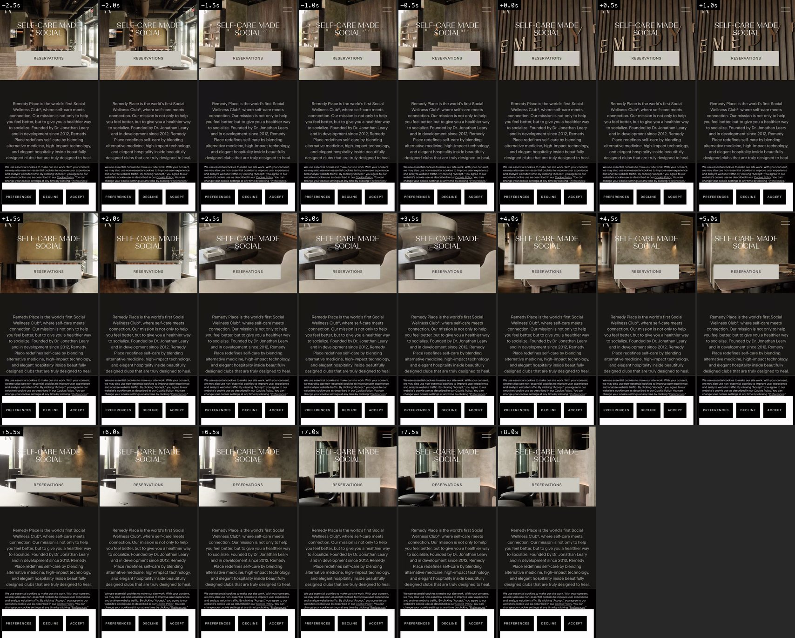
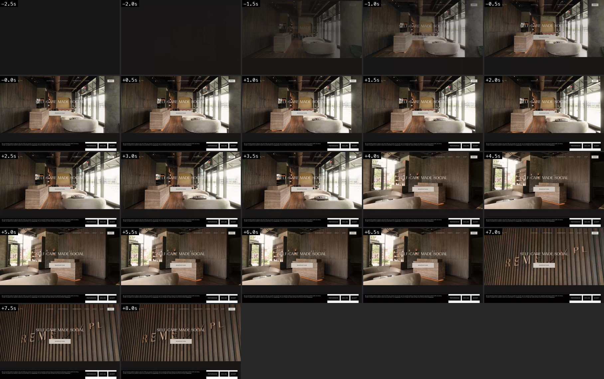
- Headline
- Self-Care Made Social
- Primary CTA
- Reservations (desktop header also has "Book")
- Price / pass / schedule
- None. No price, pass or schedule in the hero; club cards ("Our Clubs") appear after the first scroll.
- Mobile header
- Fixed, 76 px, fully transparent: logo monogram left, hamburger right. It never gets a background on mobile, so body text slides under the logo and hamburger while scrolling (visible in scroll-1). Desktop: transparent at top, dark translucent bar after the first scroll.
- Archetype note
- Looping interior video (one 41 s file, muted, autoplay, loop, playsinline, no poster) with a centred serif-caps headline and one button. On mobile the video is only a 395 px band, so the intro paragraph shows under it.
- Memorable
- The space is the product: unpeopled, warm, low-lit timber and stone footage cross-cutting every ~4.5 s under a quiet serif headline in a closed dark palette. It reads club, not gym.
- Score reason
- Beautiful art direction, but structurally the mass pattern (video + centred headline + one button); the short mobile band is the only structural twist.
- Scroll, mobile
- Native scroll, no scroll library on mobile. Header stays fixed and transparent (text collides with it). After the intro paragraph come swipe cards for the clubs, then an ice-bath photo stack.
- Scroll, desktop
- Locomotive Scroll global present and document height collapses to 900 px, i.e. a virtual smooth-scroll container (wheel scroll is smoothed). Header turns into a dark translucent bar. Next: four tall club cards ("Our Clubs"), then "Our Remedies" over a red-light-therapy photo.
- Fixed transparent header: R monogram left, hamburger right (y 20-56)
- Video band y -38 to 357 (395 px): cross-cutting dark timber and stone interiors
- H1 "SELF-CARE MADE SOCIAL", 30 px serif caps, centred over the video (y 88)
- Beige rectangular button "RESERVATIONS" (y 204-263)
- Dark panel with centred 16 px paragraph "Remedy Place is the world's first Social Wellness Club(R)..." from y 403, running below the fold
- Termly cookie sheet (PREFERENCES / DECLINE / ACCEPT) over the bottom 197 px until declined
Capture notes: Termly cookie sheet declined via DECLINE. Desktop re-run once to avoid double-scrolling a virtual-scroll page.
Mobile tech evidence ()
load event 6848 ms after page create · FCP 815 ms · LCP 937 ms (P) · globals: ['__NEXT_DATA__', 'React'] · seen in network: ['sanity'] · JS string hits: {'paralax': 7, 'locomotive': 20, 'splide': 1, 'framerMotion': 1, 'animationTimeline': 1} · videos: 2 (ion/000f834acc09065bff119fb2d04544fb3b8498d5.mp4 41.13s muted=True autoplay=True loop=True playsinline=True poster=no; ion/000f834acc09065bff119fb2d04544fb3b8498d5.mp4 41.13s muted=True autoplay=True loop=True playsinline=True poster=no) · canvas: 0, WebGL context: False · CSS scroll-timeline / animation-timeline / view-transition: none · rAF calls first 8 s: 8 · weight first 8 s: video declared 30.92 MB (unique URLs, upper bound), images 0.6 MB, all 93.78 MB (WebKit response sizes) · banner: {'clicked': 'DECLINE', 'kind': 'reject'} · modals closed: · scroll method: window.scrollBy in 24 small steps (mobile WebKit has no wheel/touch-swipe API) · scrollY at states: [0, 716, 1428, 2210]
Desktop tech evidence (chromium)
load event 6381 ms after page create · FCP 3972 ms · LCP 3712 ms (VIDEO) · globals: ['LocomotiveScroll', '__NEXT_DATA__', 'React'] · seen in network: ['sanity'] · JS string hits: {'paralax': 7, 'locomotive': 20, 'splide': 1, 'framerMotion': 1, 'animationTimeline': 1} · videos: 2 (ion/000f834acc09065bff119fb2d04544fb3b8498d5.mp4 41.13s muted=True autoplay=True loop=True playsinline=True poster=no; ion/000f834acc09065bff119fb2d04544fb3b8498d5.mp4 41.13s muted=True autoplay=True loop=True playsinline=True poster=no) · canvas: 0, WebGL context: False · CSS scroll-timeline / animation-timeline / view-transition: none · rAF calls first 8 s: 7 · weight first 8 s: 18.9 MB video/media, 1.23 MB images, 21.35 MB all (CDP wire bytes) · banner: {'clicked': 'DECLINE', 'kind': 'reject'} · modals closed: [] · scroll method: mouse.wheel (page has no native scroll height: virtual/smooth-scroll container) · scrollY at states: [0, 0, 0, 0]
Othership https://othership.us/
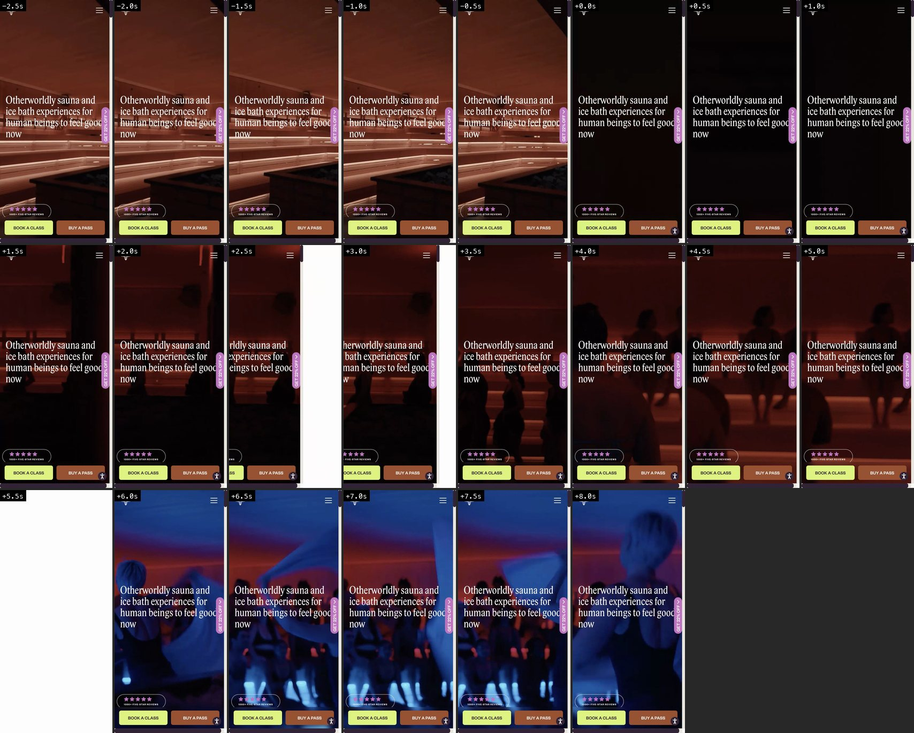
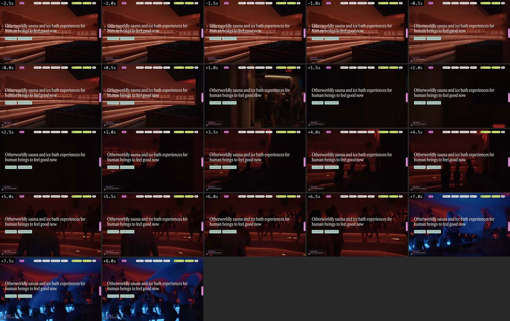
- Headline
- Otherworldly sauna and ice bath experiences for human beings to feel good now
- Primary CTA
- BOOK A CLASS (mobile, docked) / "Book a session" (desktop hero); second: BUY A PASS / Explore Locations
- Price / pass / schedule
- Yes, as routes: BOOK A CLASS goes to /schedule and BUY A PASS to /buy-a-pass from the hero and the header. No prices shown. A "Get 22% off" referral side tab and a "1000+ five-star reviews" pill sit in the hero.
- Mobile header
- 72 px, transparent over the video (star-shaped logo mark left, hamburger right). After the first scroll it turns solid cream (rgb 236,232,227) and stays fixed.
- Archetype note
- Full-bleed colour-graded sauna and class video (27 s loop, red to blue) with a left-aligned serif headline; two action buttons are docked at the bottom of the screen on mobile (variant of the mass pattern with a persistent action bar).
- Memorable
- Two thumb-reach buttons, class schedule and pass, stay docked at the bottom of the screen on every scroll state over neon-graded sauna footage. This is the direct model for "sell passes and show the schedule fast" on mobile.
- Score reason
- Same video base as the mass, but the persistent schedule and pass bar, the colour grading and the brand palette (lime, terracotta, plum, cream) make it distinct and conversion-led.
- Scroll, mobile
- Header turns cream on scroll; docked BOOK A CLASS / BUY A PASS bar and the 22% tab stay fixed. Sections in the first three scrolls: plum statement block with chips (Body positive, Alcohol free, For all, Supportive space), "Class Types" carousel with lime arrows, "Everything you need to sweat and drop-in" with SEE SCHEDULE.
- Scroll, desktop
- Header turns cream on scroll; nav carries Book a class and Buy a pass buttons. Full-viewport sections follow (900 px each), driven by GSAP ScrollTrigger.
- Transparent header: logo mark left, hamburger right (y 12-60)
- Full-bleed 844 px video, warm red sauna benches fading to blue dance-class footage
- H1 "Otherworldly sauna and ice bath experiences for human beings to feel good now", 39 px serif, left-aligned (y 328-484)
- Right-edge purple tab "GET 22% OFF" (y 373-500)
- Pill "1000+ FIVE-STAR REVIEWS" with five stars (y 718-760)
- Docked button pair: lime "BOOK A CLASS" and terracotta "BUY A PASS" (y 766-816)
- Round accessibility button bottom right
Capture notes: A "Give 22%, Get 22%" referral modal appears roughly 10 s after navigation; closed via its X for the clean scroll states. mobile-filmstrip.jpg and hero-mobile.webm come from the first run (load event at 5.2 s, clean hero, modal only after the window); mobile-filmstrip-modal-run.jpg is the re-run where the load event came at 27.8 s on a loaded machine and the modal covers every frame. The mobile tech facts in hero.json come from the re-run.
Mobile tech evidence (webkit)
load event 27819 ms after page create · FCP 1445 ms · LCP 1689 ms (H1) · globals: ['gsap', 'ScrollTrigger', 'Webflow', 'jQuery'] · seen in network: ['gsap', 'scrollTrigger', 'webflow', 'shopifyCdn'] · JS string hits: {'gsap': 66, 'ScrollTrigger': 78, 'framerMotion': 2, 'lottie': 14, 'lenis': 1} · videos: 1 (/source/87aecc90-b682-4f2e-8aeb-db168707b134.mp4 26.86s muted=True autoplay=True loop=True playsinline=True poster=no) · canvas: 0, WebGL context: False · CSS scroll-timeline / animation-timeline / view-transition: none · rAF calls first 8 s: 7422 · weight first 8 s: video declared 11.78 MB (unique URLs, upper bound), images 0.78 MB, all 24.44 MB (WebKit response sizes) · banner: · modals closed: ['closed modal via: X'] · scroll method: window.scrollBy in 24 small steps (mobile WebKit has no wheel/touch-swipe API) · scrollY at states: [0, 840, 1680, 2520]
Desktop tech evidence (chromium)
load event 4964 ms after page create · FCP 1888 ms · LCP 1908 ms (H1) · globals: ['gsap', 'ScrollTrigger', 'Webflow', 'jQuery'] · seen in network: ['gsap', 'scrollTrigger', 'webflow', 'shopifyCdn'] · JS string hits: {'gsap': 66, 'ScrollTrigger': 78, 'framerMotion': 2, 'lottie': 14} · videos: 1 (/source/87aecc90-b682-4f2e-8aeb-db168707b134.mp4 26.86s muted=True autoplay=True loop=True playsinline=True poster=no) · canvas: 0, WebGL context: False · CSS scroll-timeline / animation-timeline / view-transition: none · rAF calls first 8 s: 2649 · weight first 8 s: 11.79 MB video/media, 0.78 MB images, 14.76 MB all (CDP wire bytes) · banner: · modals closed: ['closed modal via: X'] · scroll method: mouse.wheel · scrollY at states: [0, 912, 1824, 2736]
Gymshark https://www.gymshark.com/
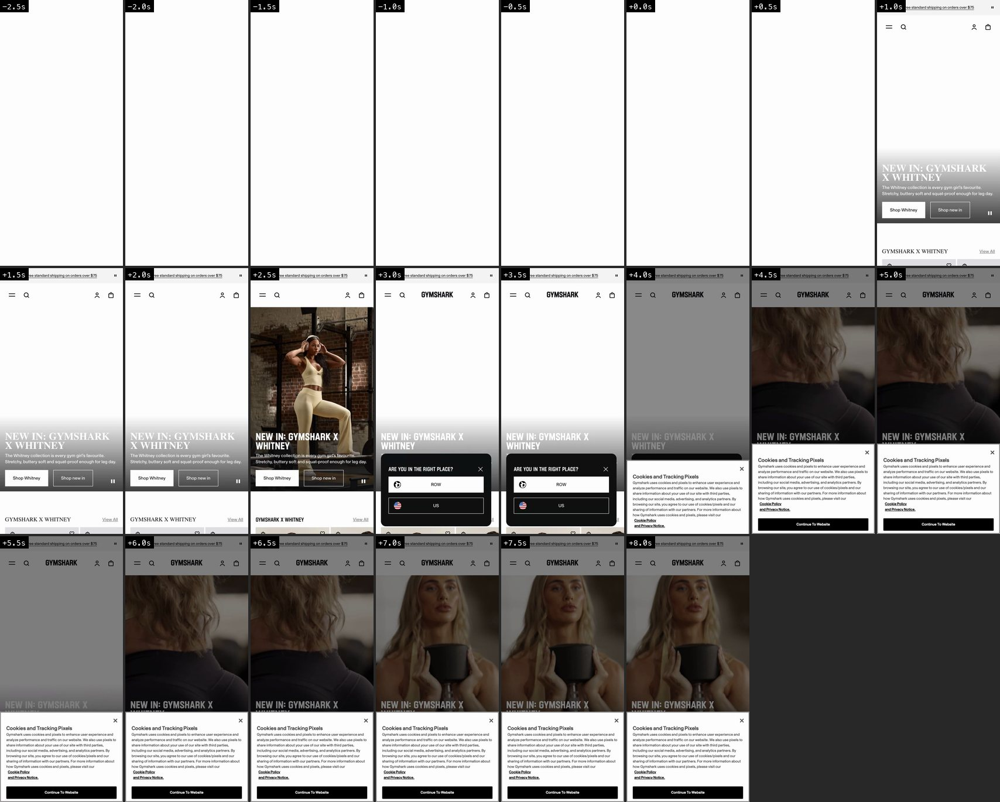
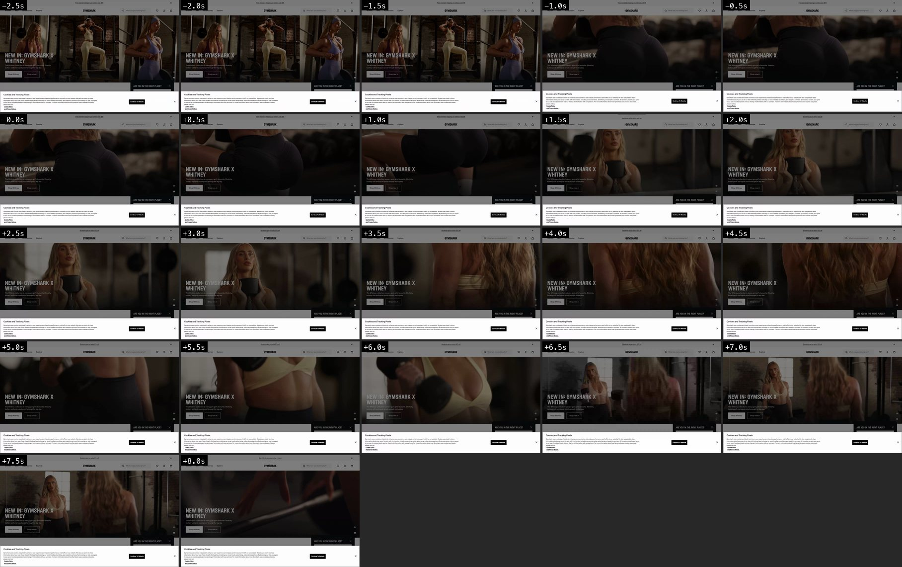
- Headline
- NEW IN: GYMSHARK X WHITNEY
- Primary CTA
- Shop Whitney (second: Shop new in)
- Price / pass / schedule
- Prices appear straight under the hero: the "Gymshark x Whitney" product row starts at y 790 with $34 / $36 prices. No price inside the hero itself.
- Mobile header
- Sticky 124 px: rotating promo bar (referral $10, sign-up 10%, free shipping over $75, students 12%) with a pause button, above the header (menu, search, centred GYMSHARK wordmark, account, bag). The promo bar slides away on scroll (-48 px), the header stays.
- Archetype note
- Looping campaign video (12 s, muted, loop, playsinline, with poster; separate 9:16 file for mobile and 8:3 banner for desktop) with a left-aligned condensed-caps headline and two buttons. Capped to ~2/3 of the screen on mobile, so the first product row peeks under it.
- Memorable
- Hero height is capped at ~2/3 of the screen on both profiles (585 px mobile, 540 px of 900 desktop) so product cards with prices are visible without scrolling; hard condensed caps are the brand voice.
- Score reason
- Still the video-plus-headline pattern, but disciplined height and the instant product row make it commercially sharp.
- Scroll, mobile
- Native scroll. Promo bar leaves, header stays sticky. Sequence: Whitney product carousel with sizes and prices, a second 9:16 video block "NEW IN: GYMSHARK CONDITIONING CLUB" with sound and pause controls, more product carousels, "Popular right now" tabs.
- Scroll, desktop
- Header (nav left, centred wordmark, search field, icons) stays sticky and the promo bar leaves; product carousels and a second wide video block follow.
- Rotating promo bar with pause button (y 8-58)
- Header: menu, search, centred GYMSHARK wordmark, account, bag (y 64-108)
- Hero video 390x585 (y 124-709, 69 % of the screen): woman training with dumbbells, cuts every ~1.5-2 s
- H2 "NEW IN: GYMSHARK X WHITNEY" 32 px condensed bold caps, bottom-left (y 520-578)
- Sub-copy 14 px (y 586) and unmute / pause buttons (y 603-655)
- Buttons "Shop Whitney" (white) and "Shop new in" (outline) (y 641-693)
- Product row "GYMSHARK X WHITNEY - view all" and first product card with price (y 790+)
- Overlays in the capture window: OneTrust "Cookies and Tracking Pixels" dialog (Continue To Website) and a dark "Are you in the right place? ROW / US" region sheet (from an Indonesian IP) over the lower part
Capture notes: Cookie dialog dismissed via "Continue To Website" on desktop; on mobile it was dismissed by scrolling (notice-only dialog) and the region sheet stayed. Gymshark shows the "Are you in the right place?" sheet because the capture machine is in Indonesia. A WebGL context was requested on the page, probably by a third-party script, not by the hero.
Mobile tech evidence (webkit)
load event 6785 ms after page create · FCP 4955 ms · LCP 6652 ms (VIDEO) · globals: ['__NEXT_DATA__', 'React'] · seen in network: ['contentful', 'shopifyCdn'] · JS string hits: {} · videos: 4 (f975846dde1/SEPT_SEASONAL_WOMENS_9x16_MOBILE.mp4 12s muted=True autoplay=False loop=True playsinline=True poster=yes; 45f727a0/SEPT_SEASONAL_WOMENS_8x3_WEB_BANNER.mp4 Nones muted=True autoplay=False loop=True playsinline=True poster=yes; 552f76f792136f38d0183470cc2d7/CC_AW26_MOBILE.mp4 Nones muted=True autoplay=False loop=True playsinline=True poster=yes) · canvas: 0, WebGL context: True · CSS scroll-timeline / animation-timeline / view-transition: none · rAF calls first 8 s: 38 · weight first 8 s: video declared 8.35 MB (unique URLs, upper bound), images 3.86 MB, all 19.97 MB (WebKit response sizes) · banner: · modals closed: ['closed modal via: Close'] · scroll method: window.scrollBy in 24 small steps (mobile WebKit has no wheel/touch-swipe API) · scrollY at states: [0, 721, 1428, 2186]
Desktop tech evidence (chromium)
load event 8913 ms after page create · FCP 2544 ms · LCP 3412 ms (VIDEO) · globals: ['__NEXT_DATA__', 'React'] · seen in network: ['contentful', 'shopifyCdn'] · JS string hits: {} · videos: 4 (f975846dde1/SEPT_SEASONAL_WOMENS_9x16_MOBILE.mp4 Nones muted=True autoplay=False loop=True playsinline=True poster=yes; 45f727a0/SEPT_SEASONAL_WOMENS_8x3_WEB_BANNER.mp4 12s muted=True autoplay=False loop=True playsinline=True poster=yes; 552f76f792136f38d0183470cc2d7/CC_AW26_MOBILE.mp4 Nones muted=True autoplay=False loop=True playsinline=True poster=yes) · canvas: 0, WebGL context: True · CSS scroll-timeline / animation-timeline / view-transition: none · rAF calls first 8 s: 38 · weight first 8 s: 9.64 MB video/media, 4.92 MB images, 18.96 MB all (CDP wire bytes) · banner: {'clicked': 'Continue To Website', 'kind': 'close'} · modals closed: [] · scroll method: mouse.wheel · scrollY at states: [0, 900, 1800, 2700]
Hyrox https://hyrox.com/
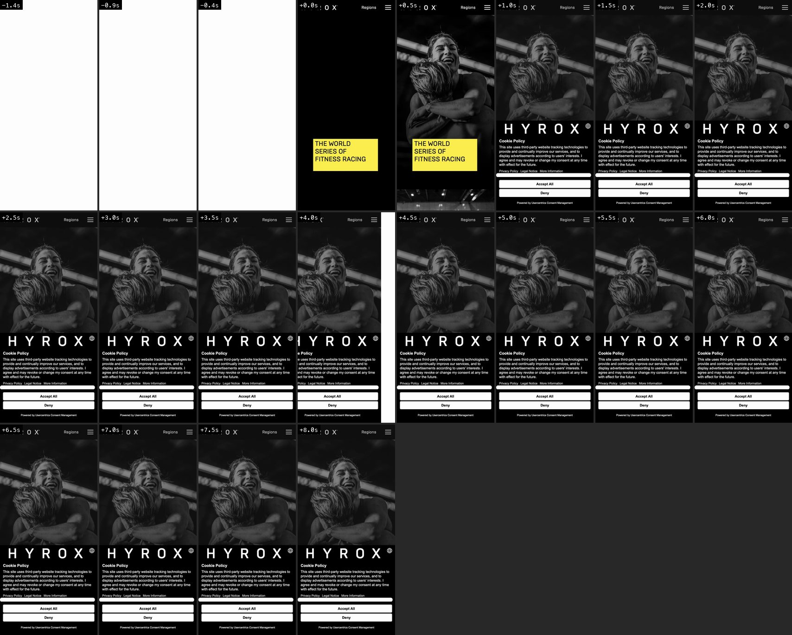
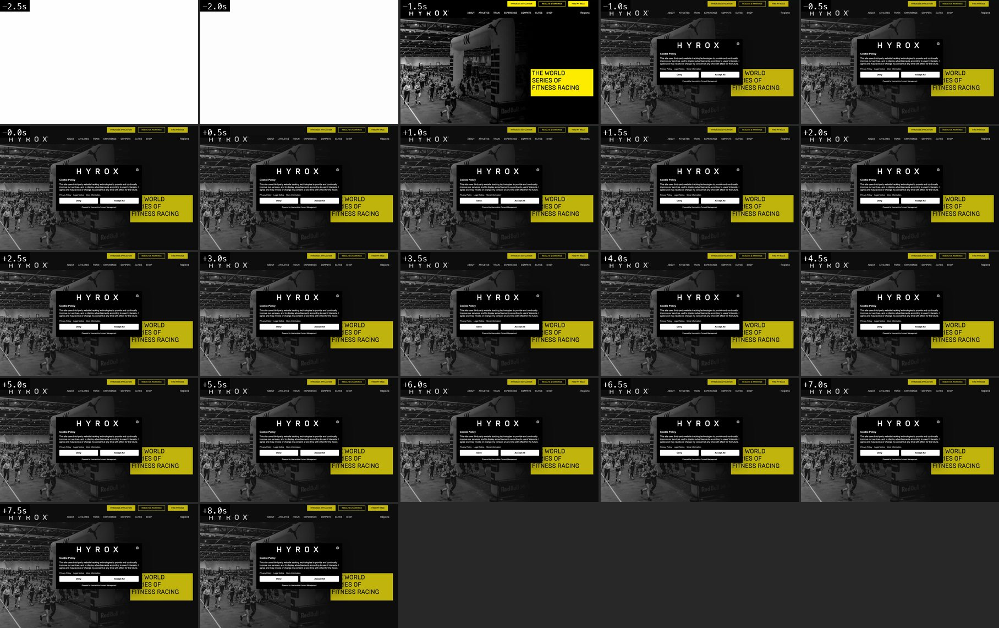
- Headline
- The World Series of Fitness Racing
- Primary CTA
- none in the hero (desktop strip above the header: "Find My Race")
- Price / pass / schedule
- None.
- Mobile header
- Fixed, 60 px, transparent: widely tracked HYROX wordmark left, "Regions" and hamburger right; stays fixed over every section.
- Archetype note
- Static black-and-white documentary photo with a yellow headline plate. No video, no script-driven motion beyond a short fade-in. WordPress (WPBakery).
- Memorable
- One accent colour: the yellow plate on black-and-white photography, plus extreme letter-spacing in the wordmark. Emotion (the hug) instead of product.
- Score reason
- Bold, ownable colour block and human photo, but a static photo with no call to action in the hero.
- Scroll, mobile
- Native scroll, nothing pinned or scrubbed. Short page (3,394 px). Next: "This is HYROX" text with yellow-outlined button, sponsor logo wall, accordion-style footer menus.
- Scroll, desktop
- Fixed header with a yellow-button strip (HYROX365 Affiliation, Results & Rankings, Find My Race); nothing pinned. Next: "This is HYROX" split block, sponsor logos, footer.
- Fixed transparent header: HYROX wordmark, "Regions", hamburger (y 18-40)
- Full-height B&W photo of a laughing athlete embracing a partner (section 760 px tall)
- Yellow plate with black caps H1 "THE WORLD SERIES OF FITNESS RACING" 26 px (y 560-654)
- Large HYROX wordmark further down inside the cookie panel until dismissed (Usercentrics: Accept All / Deny)
Capture notes: Usercentrics declined via Deny.
Mobile tech evidence ()
load event 1379 ms after page create · FCP 1069 ms · LCP 1300 ms (DIV) · globals: ['jQuery'] · seen in network: none · JS string hits: {'framerMotion': 9, 'paralax': 31} · videos: 0 (none) · canvas: 0, WebGL context: False · CSS scroll-timeline / animation-timeline / view-transition: none · rAF calls first 8 s: 75 · weight first 8 s: video declared 0.0 MB (unique URLs, upper bound), images 0.42 MB, all 1.53 MB (WebKit response sizes) · banner: {'clicked': 'Deny', 'kind': 'reject'} · modals closed: [] · scroll method: window.scrollBy in 24 small steps (mobile WebKit has no wheel/touch-swipe API) · scrollY at states: [0, 840, 1680, 2520]
Desktop tech evidence ()
load event 2695 ms after page create · FCP 724 ms · LCP 964 ms (DIV) · globals: ['jQuery'] · seen in network: none · JS string hits: {'framerMotion': 9, 'paralax': 31} · videos: 0 (none) · canvas: 0, WebGL context: False · CSS scroll-timeline / animation-timeline / view-transition: none · rAF calls first 8 s: 96 · weight first 8 s: 0.0 MB video/media, 1.33 MB images, 2.26 MB all (CDP wire bytes) · banner: {'clicked': 'Deny', 'kind': 'reject'} · modals closed: [] · scroll method: mouse.wheel · scrollY at states: [0, 900, 1800, 1821]
Tonal https://www.tonal.com/
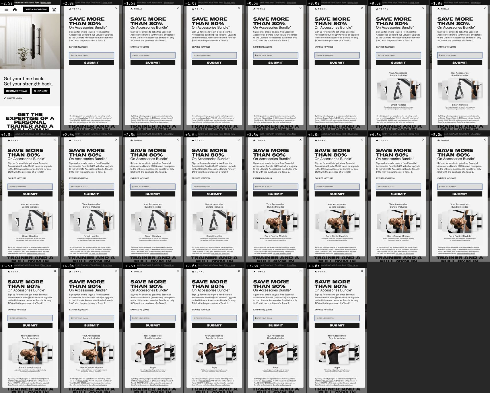
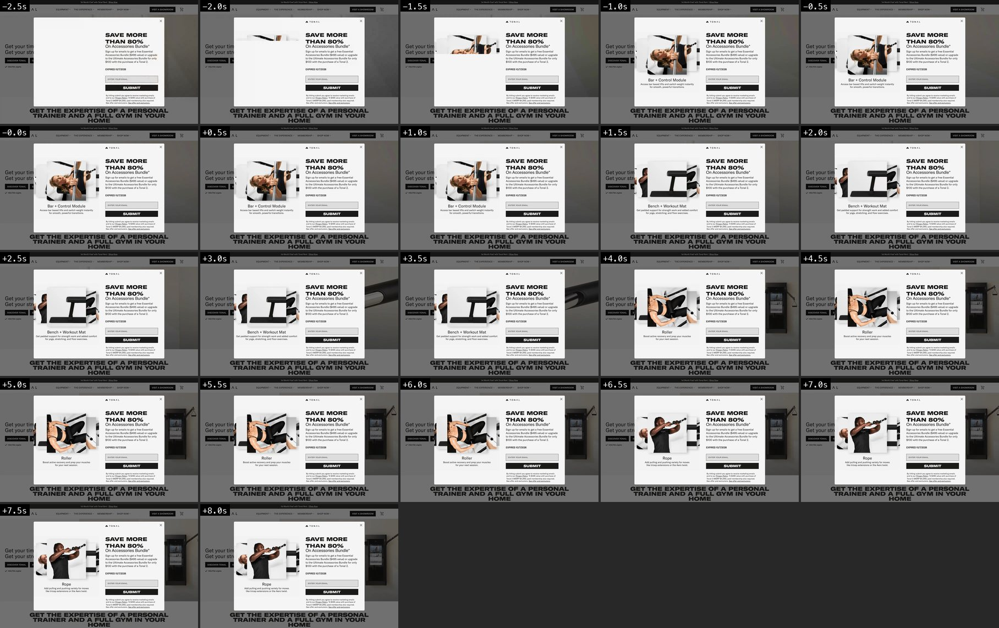
- Headline
- Get your time back. Get your strength back.
- Primary CTA
- DISCOVER TONAL (secondary: SHOP NOW)
- Price / pass / schedule
- No price in the hero. Promo strip "1st Month Free* with Tonal Rent | Shop Now"; the popup quotes "$495 value" and "Tonal 2 (MSRP $4,295)".
- Mobile header
- Sticky white header under a black promo strip: hamburger left, glyph logo, black "VISIT A SHOWROOM" button, cart.
- Archetype note
- Split screen on desktop (copy left, product video right in a boxed band); on mobile a 360 px product video band then headline and two buttons. Shopify theme. An email-offer popup covers the hero from ~1.5 s after load.
- Memorable
- nothing, template. (The one learning is negative: a full-screen email popup 1.5 s after load blanks the hero for everyone who does not close it.)
- Score reason
- Standard Shopify product hero with split layout, promo strip and a blocking email popup.
- Scroll, mobile
- Native scroll. Sticky header; then bold condensed section heading, feature rows with UI video stills, a "Try. Train. Decide." photo band with SHOP TONAL RENT.
- Scroll, desktop
- Sticky header; below the split hero come three feature columns with product stills, a "Try. Train. Decide." band, a dark membership block and coach cards.
- Black promo strip "1st Month Free* with Tonal Rent | Shop Now" (y 7-25)
- Header: hamburger, glyph, "VISIT A SHOWROOM" button, cart (y 39-83)
- Product video band 390x360: Tonal on a white wall, 29.7 s loop (y 89-449)
- H1 "Get your time back. Get your strength back." 30 px, left-aligned (y 492-558)
- Buttons "DISCOVER TONAL" (black) and "SHOP NOW" (y 570-610)
- Check line "HSA/FSA eligible" (y 626)
- Start of H2 "Get the expertise of a personal trainer and a full gym in your home" (y 729)
- Email popup "SAVE MORE THAN 80% on Accessories Bundle*" covers the whole screen from ~1.5 s until closed
Capture notes: Email popup closed via its close control for the clean states; it stays in the filmstrips (first 8 s). Hero media weight is large: both a 720p (6.7 MB) and a 1080p (10.2 MB) copy of the same loop were requested.
Mobile tech evidence (webkit)
load event 12376 ms after page create · FCP 1822 ms · LCP 12388 ms (IMG) · globals: ['Shopify', 'Vue'] · seen in network: ['swiper', 'shopifyCdn'] · JS string hits: {} · videos: 2 (308f4e5692f3c9f.HD-720p-1.6Mbps-87273979.mp4?v=0 29.67s muted=True autoplay=True loop=True playsinline=True poster=yes; b50f315dad849f.HD-1080p-2.5Mbps-47001313.mp4?v=0 29.67s muted=True autoplay=True loop=True playsinline=True poster=yes) · canvas: 0, WebGL context: False · CSS scroll-timeline / animation-timeline / view-transition: none · rAF calls first 8 s: 251 · weight first 8 s: video declared 16.91 MB (unique URLs, upper bound), images 3.85 MB, all 52.97 MB (WebKit response sizes) · banner: · modals closed: ['closed modal via: Close dialog'] · scroll method: window.scrollBy in 24 small steps (mobile WebKit has no wheel/touch-swipe API) · scrollY at states: [0, 751, 1487, 2238]
Desktop tech evidence (chromium)
load event 7154 ms after page create · FCP 648 ms · LCP 6936 ms (IMG) · globals: ['Shopify', 'Vue'] · seen in network: ['swiper', 'shopifyCdn'] · JS string hits: {} · videos: 2 (308f4e5692f3c9f.HD-720p-1.6Mbps-87273979.mp4?v=0 29.67s muted=True autoplay=True loop=True playsinline=True poster=yes; b50f315dad849f.HD-1080p-2.5Mbps-47001313.mp4?v=0 29.67s muted=True autoplay=True loop=True playsinline=True poster=yes) · canvas: 0, WebGL context: False · CSS scroll-timeline / animation-timeline / view-transition: none · rAF calls first 8 s: 263 · weight first 8 s: 13.67 MB video/media, 3.19 MB images, 22.62 MB all (CDP wire bytes) · banner: · modals closed: ['closed modal via: Close dialog'] · scroll method: mouse.wheel · scrollY at states: [0, 900, 1800, 2700]
Whoop https://www.whoop.com/
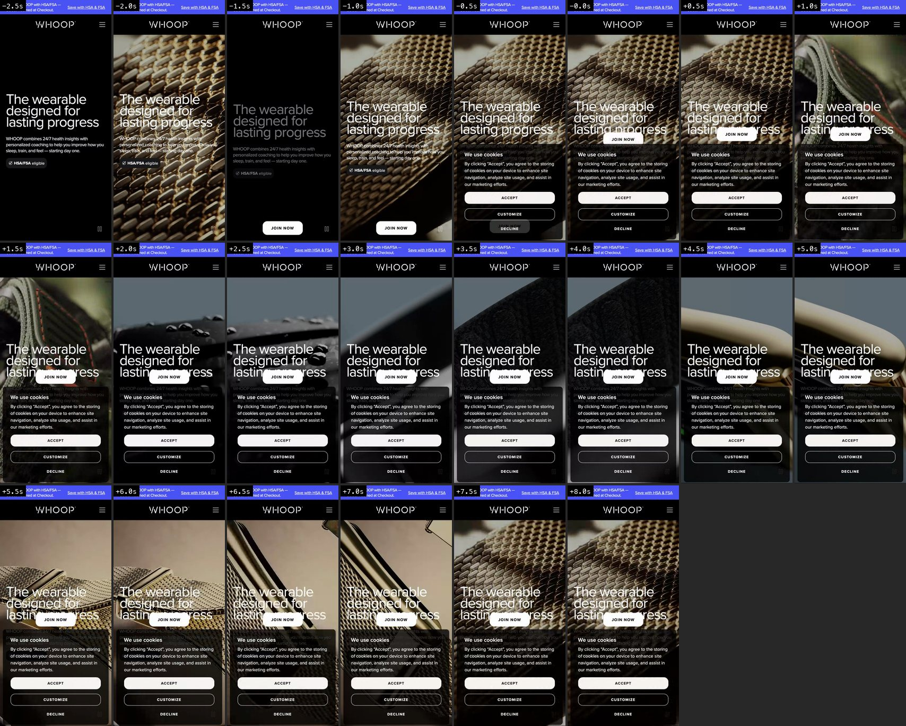
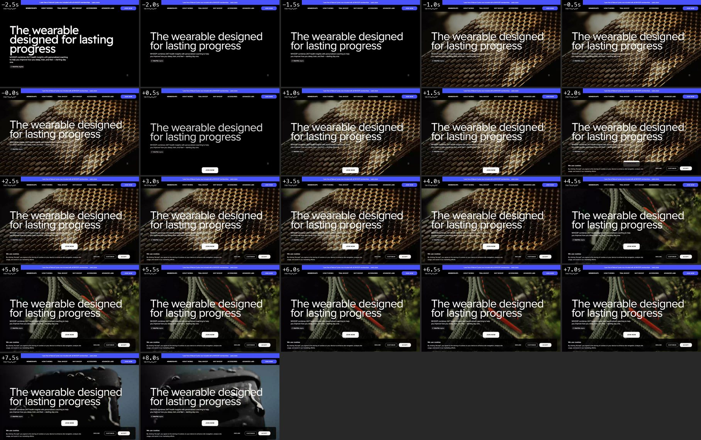
- Headline
- The wearable designed for lasting progress
- Primary CTA
- JOIN NOW
- Price / pass / schedule
- No price in the hero (an "HSA/FSA eligible" chip only). Prices ("Peak, available at $239/yr") appear in the membership block around the third scroll.
- Mobile header
- Blue HSA/FSA promo strip above a black header (WHOOP wordmark centred-left, hamburger right), 122 px in total. The header hides once you scroll down; the white JOIN NOW pill stays pinned at the bottom of the screen throughout.
- Archetype note
- Full-bleed macro video (strap and sensor textures cut every ~1.5 s) with a giant left-aligned headline and one pill button. Redirected to /us/en/. Pinned (sticky 844 px) hero panel with a persistent bottom CTA pill.
- Memorable
- Rapid macro cuts of textures plus 50 px type, and a white JOIN NOW pill that rides along at the bottom of the screen for the whole page; the buy action never leaves the thumb zone.
- Score reason
- Strong type and a pinned conversion pill, but still the full-bleed-video-with-headline pattern.
- Scroll, mobile
- Hero is a sticky 844 px panel, then white content blocks scroll over it. Header hides on scroll down. The JOIN NOW pill stays fixed and changes from white to dark as the background turns white. Content: Natural Cycles offer card, "Wear WHOOP daily", health stats, membership cards.
- Scroll, desktop
- Header (black nav + blue JOIN NOW button) hides after the first scroll; white JOIN NOW pill stays pinned bottom-centre; white content sections follow with rounded media cards and a carousel.
- Blue promo strip "Pay for WHOOP with HSA/FSA - Select Truemed at Checkout. Save with HSA & FSA" (y 7-37)
- Black header with WHOOP wordmark and hamburger (y 50-122)
- Full-bleed 9:16 hero video behind everything (y 0-844)
- H2-styled headline "The wearable designed for lasting progress", 50 px white (y 351-471), overlapping the pinned button
- Sub-copy "WHOOP combines 24/7 health insights..." 16 px (y 501)
- Chip "HSA/FSA eligible" (y 587)
- White pill "JOIN NOW" fixed at the bottom (y 776-824) with a pause-video button at the bottom right
- OneTrust cookie panel (Accept / Customize / Decline) over the lower third until declined
Capture notes: OneTrust declined via the reject-all handler. Mobile Safari requested both the 9:16 (8.7 MB) and the 16:9 (16.0 MB) hero files (declared sizes).
Mobile tech evidence ()
load event 8314 ms after page create · FCP 4963 ms · LCP 5294 ms (H2) · globals: ['__next_f'] · seen in network: ['contentful'] · JS string hits: {'paralax': 3} · videos: 2 (Meridian_HomepageHero_9x16_Post48Hours_Final.mp4 7.67s muted=True autoplay=True loop=True playsinline=True poster=no; 1/DifferentbyDesign_4x3_01_Final__1___1___1_.mp4 8s muted=True autoplay=False loop=True playsinline=True poster=no) · canvas: 0, WebGL context: False · CSS scroll-timeline / animation-timeline / view-transition: none · rAF calls first 8 s: 119 · weight first 8 s: video declared 25.02 MB (unique URLs, upper bound), images 0.02 MB, all 29.32 MB (WebKit response sizes) · banner: {'clicked': '#onetrust-reject-all-handler', 'kind': 'reject-selector'} · modals closed: · scroll method: window.scrollBy in 24 small steps (mobile WebKit has no wheel/touch-swipe API) · scrollY at states: [0, 840, 1680, 2520]
Desktop tech evidence ()
load event 6132 ms after page create · FCP 3316 ms · LCP 3328 ms (H2) · globals: ['__next_f'] · seen in network: ['contentful'] · JS string hits: {'paralax': 3} · videos: 2 (Meridian_HomepageHero_Post48Hours_16x9_Final.mp4 8.5s muted=True autoplay=True loop=True playsinline=True poster=no; 1/DifferentbyDesign_4x3_01_Final__1___1___1_.mp4 8s muted=True autoplay=False loop=True playsinline=True poster=no) · canvas: 0, WebGL context: False · CSS scroll-timeline / animation-timeline / view-transition: none · rAF calls first 8 s: 81 · weight first 8 s: 16.05 MB video/media, 0.68 MB images, 20.04 MB all (CDP wire bytes) · banner: {'clicked': '#onetrust-reject-all-handler', 'kind': 'reject-selector'} · modals closed: · scroll method: mouse.wheel · scrollY at states: [0, 900, 1800, 2700]
Oura https://ouraring.com/
- Headline
- Oura Ring 5 - Subtle. Power. The world's smallest smart ring is here.
- Primary CTA
- Explore
- Price / pass / schedule
- None. No price in the hero.
- Mobile header
- Cream announcement strip ("Free trial offer at checkout: Natural Cycles...") above a cream header: OURA wordmark left, round cart and menu buttons right; header is sticky.
- Archetype note
- Hero video that plays once (6.4 s, loop=false) and rests on its last frame: a ladybird walks onto the ring. Centred type and one pill button. On desktop the media sits inside a rounded inset frame (12 px cream margin), on mobile it runs full-bleed.
- Memorable
- A one-shot cinematic with a living detail (the ladybird) instead of a loop, then total stillness; plus the quiet cream-and-serif palette. Also notable: nothing paints for ~3.5 s after navigation (cream blank), then the poster fades in.
- Score reason
- Calm, premium and distinct from loops, but a single product image and a button; the slow first paint costs it.
- Scroll, mobile
- Native scroll. Hero scrolls away as a normal block with a floating "Explore" pill; then cream sections: "Understand your body. Own your health." with pills, swipe cards (Sleep and Rest etc.), a 86% statistic and app-screen mockups.
- Scroll, desktop
- Header nav (Shop, Your Health, Why Oura, For Organizations) sits inside the framed hero; the frame scrolls away; cream sections with swipe cards and an app-screens fan follow.
- Announcement strip (y 14-56)
- Header: OURA wordmark left, cart and menu round buttons right (y 96-138)
- Full-bleed hero video / poster behind everything (y 0-844): ring on volcanic rock, ladybird on the band
- Eyebrow "Oura Ring 5" and H1 "Subtle. Power." 48 px serif, centred (y 234-287)
- Sub-line "The world's smallest smart ring is here." 20 px (y 294)
- Blue pill "Explore" (y 748-796)
- OneTrust privacy sheet (Accept All / Accept Necessary / Manage) over the lower half until dismissed
Capture notes: OneTrust declined via "Accept Necessary" (reject handler). First 3.5 s after the load event are cream and blank on both profiles.
Mobile tech evidence ()
load event 2384 ms after page create · FCP 928 ms · LCP 4190 ms (DIV) · globals: ['__next_f'] · seen in network: none · JS string hits: {'paralax': 2, 'animationTimeline': 4} · videos: 1 (eo-bitrate=4M&s=0cee839844d4cc77a89999a32e083c20 6.37s muted=True autoplay=True loop=False playsinline=True poster=yes) · canvas: 0, WebGL context: False · CSS scroll-timeline / animation-timeline / view-transition: none · rAF calls first 8 s: 455 · weight first 8 s: video declared 1.45 MB (unique URLs, upper bound), images 0.12 MB, all 4.65 MB (WebKit response sizes) · banner: {'clicked': '#onetrust-reject-all-handler', 'kind': 'reject-selector'} · modals closed: · scroll method: window.scrollBy in 24 small steps (mobile WebKit has no wheel/touch-swipe API) · scrollY at states: [0, 724, 1470, 2205]
Desktop tech evidence ()
load event 2338 ms after page create · FCP 1000 ms · LCP 2576 ms (VIDEO) · globals: ['__next_f'] · seen in network: none · JS string hits: {'paralax': 2, 'animationTimeline': 4} · videos: 1 (eo-bitrate=4M&s=0cee839844d4cc77a89999a32e083c20 6.37s muted=True autoplay=True loop=False playsinline=True poster=yes) · canvas: 0, WebGL context: False · CSS scroll-timeline / animation-timeline / view-transition: none · rAF calls first 8 s: 406 · weight first 8 s: 1.45 MB video/media, 0.29 MB images, 3.34 MB all (CDP wire bytes) · banner: {'clicked': '#onetrust-reject-all-handler', 'kind': 'reject-selector'} · modals closed: · scroll method: mouse.wheel · scrollY at states: [0, 900, 1800, 2700]
Alo Yoga https://www.aloyoga.com/
- Headline
- JAVA BROWN (NEW IN)
- Primary CTA
- SHOP NEW IN
- Price / pass / schedule
- Free-shipping threshold in the promo bar only (RP 1,499,000 on the Indonesian storefront). No product price in the hero.
- Mobile header
- Rotating brown promo bar with pause button, white header (menu, search, centred alo logo, account, wishlist, cart), a black "SIGN IN / SIGN UP" strip and a row of category thumbnails (Women's, New In, Men's, Best Sellers). After the first scroll the promo bar leaves; header and the black strip stay sticky.
- Archetype note
- Mobile: retail utility chrome then a single editorial photo block. Desktop: three-panel editorial collage (large "JAVA BROWN" photo with a NEW IN roundel, two portrait panels with a caption and a SHOP NEW IN button). Static, no video. Shopify theme.
- Memorable
- nothing, template. (Mobile shows the hero only after ~290 px of store chrome; desktop collage is clean but static.)
- Score reason
- Standard Shopify retail layout; hero image is pushed down by utility rows on mobile.
- Scroll, mobile
- Native scroll; header and sign-in strip sticky. Sections: category link stack ("Matching sets", "Best sellers"), "Fall neutrals on repeat" photo, "Shop by color" cards, "Now trending" editorial blocks.
- Scroll, desktop
- Sticky 84 px header; below the hero come "Trending now" product row, category tiles, "Fall neutrals on repeat" three-photo band, "Shop by color" cards, "Now trending" editorial pairs.
- Promo bar "FREE SHIPPING OVER RP 1,499,000" / "SUBSCRIBE AND GET 15% OFF..." with pause button (y 1-40)
- Header: menu, search, alo logo, account, wishlist, cart (y 52-110)
- Black strip "SIGN IN/SIGN UP" (y 122-148)
- Row of 100x100 category thumbnails with labels Women's, New In, Men's, Best Sellers (y 157-280)
- Hero block "JAVA BROWN" with NEW IN roundel from y ~290; the "SHOP NEW IN" button sits near y 640
- Chat bubble "Let's Chat!" bottom right
- Osano cookie sheet (Accept / Decline / Manage preferences) over ~60 % of the screen until declined
Capture notes: www.aloyoga.com loads, then a client-side script redirects to https://aloyoga.co.id/ (Indonesian storefront) because the capture machine is in Indonesia; both profiles are therefore the Indonesian storefront (title "ALO Indonesia"). Osano declined via DECLINE. Related pages captured separately: aloyoga-studios (Alo Studios / Sanctuary), aloyoga-wellnessclub (membership app).
Mobile tech evidence ()
load event 12115 ms after page create · FCP 1226 ms · LCP 2476 ms (IMG) · globals: ['Shopify', 'Vue'] · seen in network: ['shopifyCdn'] · JS string hits: {'framerMotion': 1} · videos: 0 (none) · canvas: 0, WebGL context: False · CSS scroll-timeline / animation-timeline / view-transition: none · rAF calls first 8 s: 342 · weight first 8 s: video declared 0.0 MB (unique URLs, upper bound), images 2.26 MB, all 13.51 MB (WebKit response sizes) · banner: {'clicked': 'DECLINE', 'kind': 'reject'} · modals closed: · scroll method: window.scrollBy in 24 small steps (mobile WebKit has no wheel/touch-swipe API) · scrollY at states: [0, 840, 1680, 2520]
Desktop tech evidence (chromium)
load event 6854 ms after page create · FCP 924 ms · LCP 2384 ms (IMG) · globals: ['Shopify', 'Vue'] · seen in network: ['shopifyCdn'] · JS string hits: {'framerMotion': 1} · videos: 0 (none) · canvas: 0, WebGL context: False · CSS scroll-timeline / animation-timeline / view-transition: none · rAF calls first 8 s: 19 · weight first 8 s: 0.81 MB video/media, 2.05 MB images, 10.23 MB all (CDP wire bytes) · banner: {'clicked': 'DECLINE', 'kind': 'reject'} · modals closed: [] · scroll method: mouse.wheel · scrollY at states: [0, 900, 1800, 2700]
Lululemon https://shop.lululemon.com/
not captured (blocked or pending), see notes
- Headline
- An elevated form of ease.
- Primary CTA
- Shop Women's What's New (second: Explore Loungewear)
- Price / pass / schedule
- None. A "Get 15% off*" email popup arrives ~2 s after the hero shows.
- Mobile header
- Dismissible announcement bar ("New gear dropping every Tuesday. Shop What's New", with X), then a sticky white header: lululemon logo left, Search, bag, hamburger.
- Archetype note
- Full-bleed photo carousel (play/pause and previous/next controls) with a left-aligned headline split into per-letter spans, a sub-line and two white pill buttons. Next.js.
- Memorable
- nothing, template. (Detail: the headline is split into per-letter spans, which suggests a staggered letter reveal; the animation had finished before the first filmstrip frame. The site ships CSS animation-timeline and view-timeline rules.)
- Score reason
- Retail carousel hero with campaign photo and two pills, plus a blocking 15% email popup.
- Scroll, mobile
- Native scroll, header stays sticky. Sequence: "New and trending" tabs (Women's / Men's) with a 2-column photo grid, "Shop by colour" product grid, a full-bleed editorial photo ("Big news for Define.").
- Scroll, desktop
- Not captured (blocked).
- Announcement bar with X (y 10-24)
- Header: logo, Search, bag, hamburger (y 37-85)
- Full-bleed photo 390x844 of a person in grey loungewear (y 89-933)
- H1 "An elevated form of ease." 50 px white, left-aligned, set letter by letter in spans (y 389-500)
- Sub-line "Experience Smooth Spacer's soft, cool sensation." 28 px (y 515)
- Two white pill buttons "Shop Women's What's New" and "Explore Loungewear" (y 636-740)
- Carousel controls: play, previous, next (y 792-828) and a "Feedback" tab on the right edge (y 422)
- Email popup "New here? Stretch the possibilities. Get 15% off*" with an email field appears over the hero ~2 s after load
Desktop blocked: Chromium 1440x900: net::ERR_HTTP2_PROTOCOL_ERROR on shop.lululemon.com and www.lululemon.com (and a navigation timeout with --disable-http2). WebKit with a desktop user agent: HTTP 400 {"message":"Bad Request.","errorCode":"GE401001"}. Mobile WebKit (iPhone user agent) loads normally. No workaround attempted (bot protection).
Capture notes: Announcement bar closed via its X; email popup visible in the scroll-0-banner and filmstrip, closed for the clean states. Hero media: 5 images, no video (images ~0.8 MB in the first 8 s).
Mobile tech evidence (webkit)
load event 5329 ms after page create · FCP 1959 ms · LCP 2096 ms (IMG) · globals: ['__NEXT_DATA__', 'React'] · seen in network: none · JS string hits: {} · videos: 0 (none) · canvas: 0, WebGL context: True · CSS scroll-timeline / animation-timeline / view-transition: {'animationTimeline': 10, 'viewTimeline': 4} · rAF calls first 8 s: 512 · weight first 8 s: video declared 0.0 MB (unique URLs, upper bound), images 0.8 MB, all 6.57 MB (WebKit response sizes) · banner: {'clicked': 'Close', 'kind': 'close'} · modals closed: [] · scroll method: window.scrollBy in 24 small steps (mobile WebKit has no wheel/touch-swipe API) · scrollY at states: [0, 840, 1680, 2520]
Desktop tech: not captured
On https://www.on.com/
- Headline
- Dream On, Soccer
- Primary CTA
- Find out more (second: Kylian's edit)
- Price / pass / schedule
- None.
- Mobile header
- Sticky "On App / Swiss Performance Running Shoes & Clothing / Open" smart-banner on top (dismissible); the On logo mark sits top-left over the photo; navigation lives in a fixed bottom tab bar (search, bag, AI assistant, account, menu).
- Archetype note
- Full-bleed photo (Kylian Mbappe in a robot-arm lab) with a bottom-left headline and two white pills. Stills only, no hero video. Mobile web has an app-style bottom tab bar.
- Memorable
- The mobile web bottom tab bar (app-style thumb navigation) and a photo that cuts from grey placeholder to portrait in about half a second.
- Score reason
- Strong portrait photo and thumb-zone navigation, but a plain image hero with a standard promo popup.
- Scroll, mobile
- Native scroll; the app banner and bottom tab bar stay fixed. Sequence: "Shop" category carousel (Shoes, Apparel...), category list rows with arrows (Marathon, Trail running...), "New arrivals" product carousel with prices.
- Scroll, desktop
- Header nav (Shop, Sports, Explore, Shoe Finder) and icons sit over the photo and scroll away with it (no sticky header in the three scroll states). Next: "Shop" row of three photo tiles (Shoes, Apparel, Accessories), a text category list beside a portrait, a shoe carousel with arrows, then "New arrivals".
- Open-in-app banner with icon, "On App", "Open" and X (y 12-72)
- Full-bleed 390x764 photo (y 80-844) of a smiling man in an olive tracksuit in front of a robot arm
- On logo mark top-left (y 88)
- H1 "Dream On, Soccer" 26 px, centred near the bottom (y 663)
- Two white pill buttons "Find out more" and "Kylian's edit" (y 708-756)
- Fixed bottom tab bar: search, bag, AI assistant, account, menu (y 782-830)
- Email popup "Don't miss a step" (10% off, email field) over the lower half ~3 s after load, until closed
Capture notes: Desktop newsletter modal ("Don't miss a step") closed via its Close control after the first desktop run left it open. From the Indonesian capture IP, https://www.on.com/en-id/ showed a blocking modal "Apologies, we're closed for now. We cannot guarantee deliveries to the area." (first run, not kept). The kept captures use https://www.on.com/en-us/. Newsletter modal closed via its X on mobile.
Mobile tech evidence (webkit)
load event 1679 ms after page create · FCP 1318 ms · LCP 5986 ms (P) · globals: ['jQuery'] · seen in network: ['contentful'] · JS string hits: {'framerMotion': 9, 'ScrollTrigger': 2, 'gsap': 2, 'startViewTransition': 2, 'paralax': 4, 'lenis': 2} · videos: 0 (none) · canvas: 0, WebGL context: True · CSS scroll-timeline / animation-timeline / view-transition: none · rAF calls first 8 s: 395 · weight first 8 s: video declared 0.0 MB (unique URLs, upper bound), images 1.58 MB, all 5.95 MB (WebKit response sizes) · banner: · modals closed: ['closed modal via: Close'] · scroll method: window.scrollBy in 24 small steps (mobile WebKit has no wheel/touch-swipe API) · scrollY at states: [0, 783, 1566, 2300]
Desktop tech evidence (chromium)
load event 1049 ms after page create · FCP 808 ms · LCP 4568 ms (IMG) · globals: ['jQuery'] · seen in network: ['contentful'] · JS string hits: {'ScrollTrigger': 2, 'gsap': 2, 'framerMotion': 9, 'startViewTransition': 2, 'paralax': 4, 'lenis': 2} · videos: 0 (none) · canvas: 0, WebGL context: False · CSS scroll-timeline / animation-timeline / view-transition: none · rAF calls first 8 s: 602 · weight first 8 s: 0.0 MB video/media, 0.99 MB images, 5.09 MB all (CDP wire bytes) · banner: · modals closed: ['closed modal via: Close'] · scroll method: mouse.wheel · scrollY at states: [0, 900, 1800, 2700]
Arc'teryx https://arcteryx.com/
- Headline
- SPERRO SV : DESIGNED TO PERSIST
- Primary CTA
- Women's / Men's (third: More on System_0)
- Price / pass / schedule
- None.
- Mobile header
- Black utility row (ARC'TERYX / OUTLET / RESALE / TRADE-IN, flag and EN), grey trade-in strip, then a floating white rounded header card (logo, search, account, bag, hamburger) over the photo. The block scrolls away; no sticky header in the first three scrolls.
- Archetype note
- Full-bleed still photo (climber in an orange shell on snow) with centred headline, sub-line and three buttons. Not animated in the first 8 s on either profile. On mobile the hero is a 562 px band (two thirds of the screen).
- Memorable
- The mobile hero is cut at 562 px, exactly two thirds of the screen, so the next editorial block (orange fabric "Walk Gently") shows below it; on desktop the white header floats as an inset rounded card over the photo.
- Score reason
- Restrained, technical editorial feel with an inset floating header and a hero that respects the 2/3 height, but a static still.
- Scroll, mobile
- Native scroll, no pinned or scrubbed sections. Editorial photo blocks follow (The Orange Shirt, New Fall Essentials with pairs of outline buttons), then a product carousel and an app block.
- Scroll, desktop
- No sticky header after the first scroll. A two-up editorial band (orange fabric and a climber), a three-product row with text links and two more editorial photo tiles follow.
- Black utility row with Outlet, Resale, Trade-in and a Canadian flag / EN (y 6-30)
- Grey strip "Trade in your gear, get a 30% credit" (y 51)
- Floating white header card: ARC'TERYX logo, search, account, bag, hamburger (y 80-140)
- Hero photo 390x562 (y 80-642): orange jacket on snow
- SV mark, then H1 "SPERRO SV : DESIGNED TO PERSIST" 28 px serif caps, centred (y 370)
- Sub-line about the first GORE-TEX jacket made with recycled materials
- Outline buttons "Women's" and "Men's", text link "More on System_0" (y ~480-560)
- Orange "WALK GENTLY" banner start below the hero (y 642+)
- Privacy sheet (Continue) over the lower-left until dismissed
Capture notes: Redirected to /ca/en (Canada) from the capture IP. Privacy sheet dismissed via "Continue" (notice-only; no reject option shown). The first desktop run hit the time limit and was repeated once.
Mobile tech evidence ()
load event 7667 ms after page create · FCP 1055 ms · LCP 1264 ms (IMG) · globals: ['__NEXT_DATA__', 'jQuery', 'React'] · seen in network: ['hls', 'sanity'] · JS string hits: {'swiper': 5, 'paralax': 5, 'framerMotion': 1} · videos: 0 (none) · canvas: 0, WebGL context: False · CSS scroll-timeline / animation-timeline / view-transition: none · rAF calls first 8 s: 47 · weight first 8 s: video declared 0.0 MB (unique URLs, upper bound), images 0.58 MB, all 4.94 MB (WebKit response sizes) · banner: {'clicked': 'Continue', 'kind': 'close'} · modals closed: [] · scroll method: window.scrollBy in 24 small steps (mobile WebKit has no wheel/touch-swipe API) · scrollY at states: [0, 827, 1611, 2419]
Desktop tech evidence (chromium)
load event 6416 ms after page create · FCP 1500 ms · LCP 1732 ms (IMG) · globals: ['__NEXT_DATA__', 'jQuery', 'React'] · seen in network: ['hls', 'sanity'] · JS string hits: {'swiper': 5, 'paralax': 5, 'framerMotion': 1} · videos: 0 (none) · canvas: 0, WebGL context: False · CSS scroll-timeline / animation-timeline / view-transition: none · rAF calls first 8 s: 47 · weight first 8 s: 0.0 MB video/media, 0.48 MB images, 4.79 MB all (CDP wire bytes) · banner: {'clicked': 'Continue', 'kind': 'close'} · modals closed: [] · scroll method: mouse.wheel · scrollY at states: [0, 900, 1800, 2700]
Plunge (extra: cold plunge and sauna brand) https://plunge.com/
- Headline
- Take the plunge. Change your life.
- Primary CTA
- Shop Plunges (second: Shop Saunas)
- Price / pass / schedule
- No product price in the hero. A trust strip directly under the photo shows "4.9 stars, 1,000+ Reviews", "Free Delivery on Cold Plunges*", "1 Year Warranty", "0% APR up to 24 Months*" (financing). Discount quiz of the first run: "You've Got Up To $6,493 Off".
- Mobile header
- Sticky white 64 px header: menu button left, Plunge logo, help, search and bag icons; it stays fixed.
- Archetype note
- Full-bleed still photo (a man stepping into a cold plunge next to a cedar sauna) with a left-aligned (desktop) or centred (mobile) headline, sub-line, "Join Over 40,000!" badge and two outline pill buttons. Shopify theme. In the first run a full-screen discount quiz with a 30-second countdown covered the hero about 3 s after load; in the kept re-run it did not appear (timing or A/B dependent).
- Memorable
- nothing, template. Learnings: the trust and financing strip sits right at the fold under the photo; and a countdown-timer discount quiz can take over the whole screen within seconds.
- Score reason
- Good category photo and a smart trust strip, but standard ecommerce hero with a popup risk.
- Scroll, mobile
- Native scroll (scrollY reads 0 because the body scrolls). Sticky header; sections: "Discover your perfect Plunge" product cards with ratings, "Top Seller" tags and a swipe carousel, sauna cards, then "Plunge x Blueprint" promo and a 0% APR finance block.
- Scroll, desktop
- Header (logo, Cold Plunge, Sauna, For Business, App, Supplies & Accessories, Learn, icons) scrolls away; hero is 640 px of the 900 px screen with the trust strip under it; then three-column product cards (plunges, saunas), a dark "Plunge x Blueprint" card and a desert-pool financing banner.
- White header: Open menu, Plunge logo, help, search, bag (y 18-46)
- Photo 390x720 (y 62-782): man stepping into a white plunge tub beside a cedar sauna
- Blue badge "Join Over 40,000!" (y 112-139)
- H2 "Take the plunge. Change your life." 34 px white, centred (y 148-230)
- Sub-line "Premium contrast therapy for peak performance, recovery, and longevity." (y 246)
- Two outline pills "Shop Plunges" and "Shop Saunas" (y 319-428)
- Trust strip at the fold: 4.9 star rating, Free Delivery on Cold Plunges, 1 Year Warranty, 0% APR up to 24 Months (y 810)
- First run only: full-screen overlay with logo, "0:30" countdown, "You've Got Up To $6,493 Off" and Plunge / Sauna / Both buttons
Capture notes: First run (kept as plunge/mobile-filmstrip-popup-run.jpg) showed the countdown popup in every state; the kept re-run is popup-free. Eight video elements sit lower on the page and none loaded in the first 8 s.
Mobile tech evidence (webkit)
load event 2957 ms after page create · FCP 1952 ms · LCP 1988 ms (IMG) · globals: ['Shopify', 'Swiper', 'jQuery'] · seen in network: ['swiper', 'shopifyCdn'] · JS string hits: {'framerMotion': 1} · videos: 8 ( Nones muted=False autoplay=False loop=False playsinline=False poster=no; Nones muted=False autoplay=False loop=False playsinline=False poster=no; Nones muted=False autoplay=False loop=False playsinline=False poster=no) · canvas: 0, WebGL context: False · CSS scroll-timeline / animation-timeline / view-transition: none · rAF calls first 8 s: 963 · weight first 8 s: video declared 0.0 MB (unique URLs, upper bound), images 2.45 MB, all 6.11 MB (WebKit response sizes) · banner: · modals closed: ['closed modal via DOM click: Close menu', 'closed modal via DOM click: Close menu'] · scroll method: window.scrollBy in 24 small steps (mobile WebKit has no wheel/touch-swipe API) · scrollY at states: [0, 814, 1627, 2440]
Desktop tech evidence (chromium)
load event 2664 ms after page create · FCP 768 ms · LCP 768 ms (IMG) · globals: ['Shopify', 'Swiper', 'jQuery'] · seen in network: ['swiper', 'shopifyCdn'] · JS string hits: {'framerMotion': 1} · videos: 8 ( Nones muted=False autoplay=False loop=False playsinline=False poster=no; Nones muted=False autoplay=False loop=False playsinline=False poster=no; Nones muted=False autoplay=False loop=False playsinline=False poster=no) · canvas: 0, WebGL context: False · CSS scroll-timeline / animation-timeline / view-transition: none · rAF calls first 8 s: 477 · weight first 8 s: 1.15 MB video/media, 1.73 MB images, 6.34 MB all (CDP wire bytes) · banner: · modals closed: [] · scroll method: mouse.wheel · scrollY at states: [0, 900, 1800, 2700]
Alo Wellness Club (extra: Alo membership page) https://wellnessclub.aloyoga.com/
- Headline
- UNLIMITED WELLNESS. ZERO SUBSCRIPTIONS.
- Primary CTA
- Join Now
- Price / pass / schedule
- Offer in the headline ("zero subscriptions", app now free). No price, pass or schedule list in the hero.
- Mobile header
- Slim white header (52 px): hamburger left, "alo WELLNESS CLUB" logo centre, SIGN IN right; sticky.
- Archetype note
- Membership hero: 520 px looping boat-deck workout video (7.6 s, muted autoplay loop playsinline, no poster) behind white all-caps copy, a square white JOIN NOW button and a login line. Smooth-scroll library on the page.
- Memorable
- A membership offer stated as the headline over sunlit outdoor workout footage, hero cut to ~62 % of the screen so the next block shows; relevant for a gym selling memberships.
- Score reason
- Clear membership proposition and good height discipline, but standard video-with-headline.
- Scroll, mobile
- Page height reports 844 px, i.e. a smooth-scroll container (Lenis strings in the bundle). Content under the hero: "Your wellness routine, upgraded" with phone mockups.
- Scroll, desktop
- Page height reports 900 px, so desktop uses a virtual smooth-scroll container (wheel scroll is smoothed; Lenis strings in the bundle). Sticky white 80 px header (nav: Yoga, Fitness, Mindfulness, Wellness, Skills, Instructors, Events, SIGN IN). The hero is 617 px of the 900 px screen (69 %). Below: benefit checklist with phone mockups, tabbed "Movement and more" video cards, instructor row, and a three-level kettlebell membership graphic with a second JOIN NOW.
- White header: hamburger, alo WELLNESS CLUB logo, SIGN IN (y 10-52)
- Video band 390x520 (y 60-580): athletes on a yacht deck in sunlight, cuts every ~2 s
- Headline in two lines "UNLIMITED WELLNESS." / "ZERO SUBSCRIPTIONS." 28 px white caps (y 160-236)
- Body copy "The ALO Wellness Club app is now free..." 16 px (y 240-336)
- White rectangular button "JOIN NOW" (y 356-396)
- Line "Already an Alo Access member? You're all set. Use your existing login" (y 428-480)
- Next block "YOUR WELLNESS ROUTINE, UPGRADED" begins at y 612, so it peeks above the fold
Capture notes: alomoves.com (Alo streaming brand) redirects to this membership page, which is the Alo club page found. Notice-only cookie sheet at the bottom (X) closed by the modal handler.
Mobile tech evidence (webkit)
load event 11638 ms after page create · FCP 3294 ms · LCP 3818 ms (DIV) · globals: ['jQuery'] · seen in network: ['shopifyCdn'] · JS string hits: {'lenis': 4, 'lottie': 1, 'framerMotion': 3, 'videojs': 20, 'paralax': 1} · videos: 3 (142ff666&apiKey=7ae91e2100c441348821b5902d6e5194 7.63s muted=True autoplay=True loop=True playsinline=True poster=no; 1e64ba0bafac06af2182b83&alt=media&optimized=true 9.7s muted=True autoplay=True loop=True playsinline=True poster=no; Nones muted=False autoplay=False loop=True playsinline=False poster=yes) · canvas: 0, WebGL context: False · CSS scroll-timeline / animation-timeline / view-transition: {'viewTransition': 2} · rAF calls first 8 s: 177 · weight first 8 s: video declared 0.0 MB (unique URLs, upper bound), images 0.25 MB, all 26.03 MB (WebKit response sizes) · banner: · modals closed: [] · scroll method: window.scrollBy in 24 small steps (mobile WebKit has no wheel/touch-swipe API) · scrollY at states: [0, 0, 0, 0]
Desktop tech evidence (chromium)
load event 15261 ms after page create · FCP 2376 ms · LCP 3460 ms (VIDEO) · globals: ['jQuery'] · seen in network: ['shopifyCdn'] · JS string hits: {'framerMotion': 3, 'lenis': 4, 'lottie': 1, 'videojs': 20, 'paralax': 1} · videos: 3 (259db580&apiKey=7ae91e2100c441348821b5902d6e5194 7.63s muted=True autoplay=True loop=True playsinline=True poster=no; 1e64ba0bafac06af2182b83&alt=media&optimized=true 9.75s muted=True autoplay=True loop=True playsinline=True poster=no; Nones muted=False autoplay=False loop=True playsinline=False poster=yes) · canvas: 0, WebGL context: False · CSS scroll-timeline / animation-timeline / view-transition: {'viewTransition': 2} · rAF calls first 8 s: 11 · weight first 8 s: 10.49 MB video/media, 0.57 MB images, 16.65 MB all (CDP wire bytes) · banner: · modals closed: [] · scroll method: mouse.wheel (page has no native scroll height: virtual/smooth-scroll container) · scrollY at states: [0, 0, 0, 0]
Not captured
- The Well (https://www.thewell.com/): blocked / wrong business. https://www.thewell.com/ fails in both Playwright engines with "The certificate for this server is invalid" (certificate CN=well.com). https://thewell.com/ answers 302 to /engaged.cgi, the login of the legacy WELL online community (well.com), not a wellness club. The wellness-club "The Well" the brief means could not be found under this domain. Recorded as blocked after two attempts; no capture.
- Bathhouse NYC (extra candidate) (https://bathhousenyc.com/): dead (domain for sale). bathhousenyc.com serves a GoDaddy "BathhouseNYC.com is for sale!" page. Evidence screenshot kept as bathhouse/evidence-mobile.png. Not used.
- Aire Ancient Baths (extra candidate) (https://www.beaire.com/): blocked (HTTP 403). beaire.com answers 301 then "403 Forbidden" in mobile WebKit and desktop Chromium (curl also 403), from an Indonesian IP; likely a geo or bot block. Not captured.
- Alo Studios / Sanctuary page (part of the Alo request) (https://www.aloyoga.com/pages/studios): blocked after two attempts. From the Indonesian IP, /pages/studios (the only page found that carries the Sanctuary navigation) is redirected client-side to the aloyoga.co.id home page (attempts 1 and 2, same result as the Alo homepage capture). With requests to aloyoga.co.id aborted (attempts 3 and 4) the mobile screenshot timed out and the desktop navigation ended in a browser error page. Recorded as blocked; the Alo membership page wellnessclub.aloyoga.com was captured instead (aloyoga-wellnessclub).
Change log
- v1.0 — 2026-10-01 — first release. Captured 11 of the 12 listed sites (The Well blocked, see Not captured) plus two extras (Plunge, Alo Wellness Club). Lululemon desktop blocked. Re-captures during the run: Othership, Gymshark, Tonal, Lululemon, Remedy Place desktop, Alo desktop, Arc'teryx desktop, On desktop, Plunge (popup and overlay handling, DOM-click fallback, timeouts). Aire and Bathhouse extras could not be used; Alo Studios page blocked.